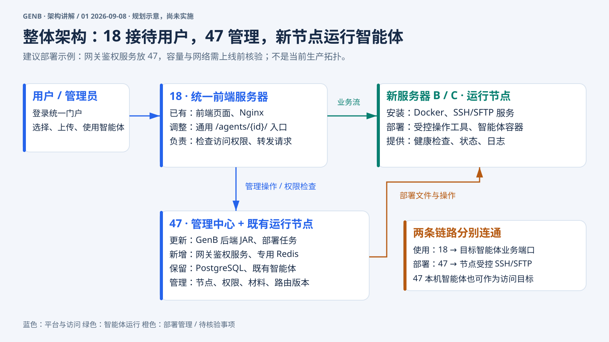
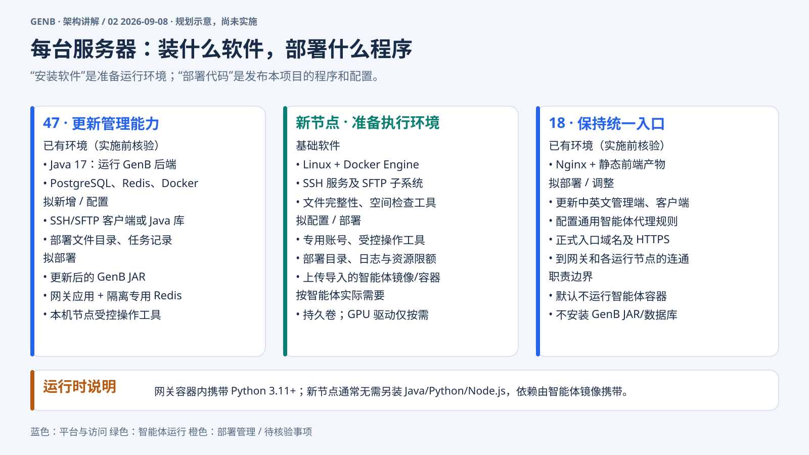
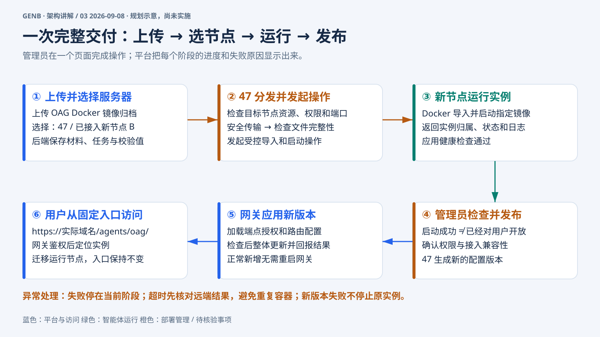
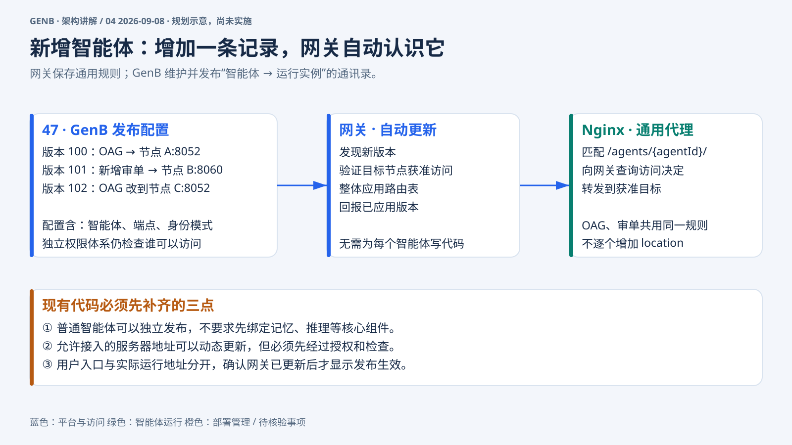
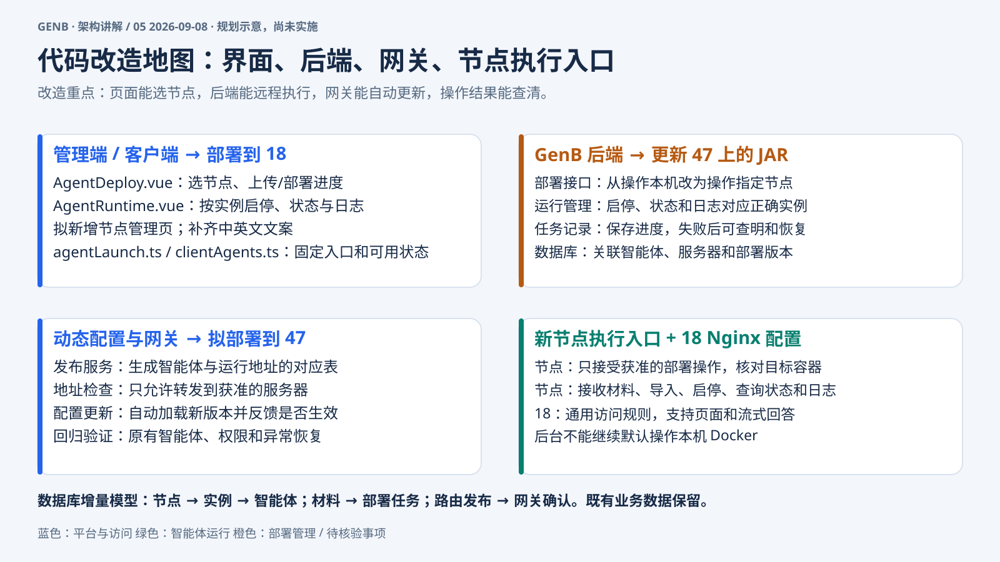

这次改造后，用户仍然从同一个平台登录和使用智能体。变化发生在后台：47 负责统一管理，新增服务器负责运行智能体，18 上的 Nginx 继续作为访问入口。47 也可以继续运行现有智能体。
管理员部署智能体时，由 47 把文件和操作发送到所选服务器。用户使用智能体时，18 先通过网关检查权限，再把请求转发给实际运行它的服务器。部署管理和用户访问是两条不同的链路，都需要打通。
这样，增加服务器后，智能体可以分散运行，用户不用记住不同的 IP 和端口。图中网关服务暂按放在 47 规划，实施前要确认资源是否够用；18 的入口带宽也需要一并评估。

47 主要升级现有 GenB 后端，增加服务器管理、远程部署和任务记录。数据库保存“哪个智能体部署在哪里、部署到哪一步”；拟新增的网关服务检查访问权限，专用 Redis 保存网关会话和缓存，减少重复查询。
新服务器主要准备 Docker 和 SSH。Docker 运行智能体，SSH/SFTP 让 47 安全地发送文件、启动或停止指定容器。还需要配置专用账号、部署目录和操作权限。智能体依赖的 Python、Java 等通常随镜像打包，新节点不必再装一整套 GenB 平台。
18 继续运行 Nginx 和平台页面，更新页面功能并配置统一访问规则和 HTTPS。新节点的 GPU、持久化数据目录等按智能体需要准备，不是每台都要安装。首版由 47 主动下发操作，新节点不用额外运行一个常驻的任务领取服务。

以 OAG 为例，管理员上传打包好的 Docker 镜像，选择部署到 47 还是新服务器 B。平台先检查权限、空间和端口，再把文件发送过去，并核对文件是否完整。管理员可以看到分发、导入、启动和检查的进度。
容器启动后，还要检查 OAG 是否真的能正常响应。检查通过，管理员再点击发布，平台才把它加入统一访问入口。上传成功、运行成功和发布成功是三个不同状态，页面会分别展示。
用户最终通过固定域名下的 /agents/oag/ 使用它。如果将来搬到其他服务器，只调整内部目标；已有文件和业务数据需要配套迁移。新版本部署失败时保留原服务，超时先查清远端结果，避免重复启动。

网关可以理解为按通讯录转接的前台。通讯录记录“OAG 在哪台服务器、使用哪个端口”。新增一个智能体，就是增加一条已审核的记录；迁移服务器，就是更新这条记录。
GenB 每次发布都会生成新的配置版本。网关发现更新后，检查目标服务器是否允许接入，再整体加载并回报结果。Nginx 使用同一套通用规则转发请求，因此符合接入规范的新智能体通常不需要修改网关代码或重启网关。
现在要补齐三件事：普通智能体可以独立发布；新增服务器地址可以受控更新；页面能确认配置已经生效。任意填写一个地址不能直接放行。遇到特殊登录方式或不兼容的页面路径，仍需单独做适配。

代码改造分为四块。第一块是页面：上传时能选服务器，能看部署进度，也能查看指定实例的日志和执行启停。用户侧则使用固定入口，并能看到智能体是否真正可用。
第二块是 47 上的后端：把原来操作本机 Docker 的逻辑，改成先确认目标节点，再执行部署。数据库要保存服务器、运行实例、部署材料和任务结果，确保两台服务器即使端口一样，也不会查错日志或停错容器。
第三块是网关：自动加载新路由、检查获准目标并反馈生效状态。第四块是新节点上的受限执行入口，以及 18 的通用 Nginx 配置。完成后，日常新增标准智能体由管理员在页面操作，不再逐个找开发人员修改网关。